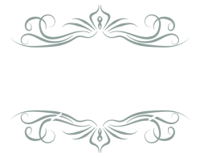
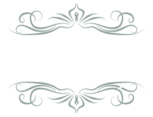
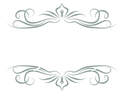
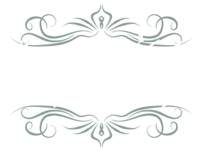
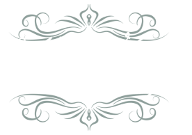
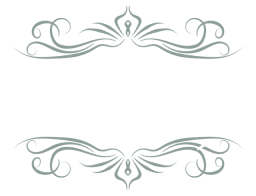
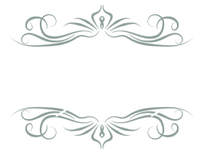
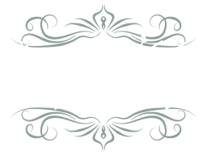
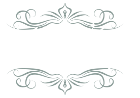

لَآ اِلٰهَ اِلَّا اللّٰهُ مُحَمَّدٌ رَّسُوْلُ اللّٰهِ ؕ

اَشْهَدُ اَنْ لَّآ اِلٰهَ اِلَّا اللّٰهُ وَحْدَهٗ لَا شَرِيْكَ لَهٗ وَاَشْهَدُ اَنَّ مُحَمَّدًا عَبْدُهٗ
وَرَسُوْلُهٗ ؕ

سُبْحَانَ اللّٰهِ وَالْحَمْدُ لِلّٰهِ وَلَآ اِلٰهَ اِلَّااللّٰهُ وَاللّٰهُ اَكْبَرُ ؕ وَلَآ حَوْلَ وَلَا
قُوَّةَ اِلَّا بِاللّٰهِ الْعَلِىِّ الْعَظِيْم ؕ

لَا اِلٰـہَ اِلَّا اللہُ وَحْدَہٗ لَا شَرِیْکَ لَہ ٗ لَہُ
الْمُلْکُ وَ لَہُ الْحَمْدُ یُحْیٖ وَ یُمِیْتُ وَ ھُوَ
حَیٌّ لَّا یَمُوْتُ اَ بَدًا اَ بَدًا ط ذُوالْجَلَالِ وَ
الْاِکْرَامِ ط بِیَدِہِ الْخَیْرُ ط وَ ھُوَ عَلٰی کُلِّ
شَیْءٍ قَدِیْرٌ

اَسْتَغْفِرُ اللہَ رَبِّیْ مِنْ کُلِّ ذَنْبٍ اَذْنَبْتُہ ٗ
عَمَدًا اَوْ خَطَأً سِرًّا اَوْ عَلَانِیَۃً وَّ اَتُوْبُ اِلَیْہِ
مِنَ الذَّنْبِ الَّذِیْ اَعْلَمُ وَمِنَ الذَّنْبِ
الَّذِیْ لَا اَعْلَمُ اِنَّکَ اَنْتَ عَلَّامُ الْغُیُوْبِ وَ
سَتَّارُ الْعُیُوْبِ وَغَفَّارُ الذُّ نُوْبِ وَلَا حَوْلَ
وَلَا قُوَّۃَ اِلَّا بِاللہِ الْعَلِیِّ الْعَظِیْمِ

اَللّٰھُمَّ اِنِّیْ اَعُوْذُ بِکَ مِنْ اَنْ اُشْرِکَ بِکَ
شَیْئًا وَّاَنَا اَعْلَمُ بِہٖ وَ اَسْتَغْفِرُکَ لِمَا لَا
اَعْلَمُ بِہٖ تُبْتُ عَنْہُ وَ تَبَرَّأْتُ مِنَ الْکُفْرِ
وَالشِّرْکِ وَالْکِذْبِ وَالْغِیْبَۃِ وَالْبِدْعَۃِ
وَالنَّمِیْمَۃِ وَالْفَوَاحِشِ وَالْبُھْتَانِ وَ
الْمَعَاصِیْ کُلِّھَا وَاَسْلَمْتُ وَاَقُوْلُ لَا اِلٰـہَ
اِلَّا اللہُ مُحَمَّدٌ رَّسُوْلُ اللہِ( صَلَّی اللہُ عَلَیْہِ وَاٰلِہٖ وَسَلَّم )
لَآ اِلٰهَ اِلَّا اللّٰهُ مُحَمَّدٌ رَّسُوْلُ اللّٰهِ ؕ
اللہ کے سوا کوئی عبادت کے لائق نہیں۔ حضرت محمد ﷺ اللہ کے رسول ہیں۔

اللہ کے سوا کوئی عبادت کے لائق نہیں۔ حضرت محمد ﷺ اللہ کے رسول ہیں۔
اَشْهَدُ اَنْ لَّآ اِلٰهَ اِلَّا اللّٰهُ وَحْدَهٗ لَا شَرِيْكَ لَهٗ وَاَشْهَدُ اَنَّ مُحَمَّدًا عَبْدُهٗ
وَرَسُوْلُهٗ ؕ
میں گواہی دیتاہوں کہ اللہ کے سوا کوئی معبود نہیں وہ اکیلا ہے اس کا کوئی شریک نہیں اور میں گواہی
دیتاہوں کہ بیشک محمد( صَلَّی اللہُ عَلَیْہِ وَاٰلِہٖ وَسَلَّم )اللہ کے بندے اوررسول ہیں۔

میں گواہی دیتاہوں کہ اللہ کے سوا کوئی معبود نہیں وہ اکیلا ہے اس کا کوئی شریک نہیں اور میں گواہی دیتاہوں کہ بیشک محمد( صَلَّی اللہُ عَلَیْہِ وَاٰلِہٖ وَسَلَّم )اللہ کے بندے اوررسول ہیں۔
سُبْحَانَ اللّٰهِ وَالْحَمْدُ لِلّٰهِ وَلَآ اِلٰهَ اِلَّااللّٰهُ وَاللّٰهُ اَكْبَرُ ؕ وَلَآ حَوْلَ وَلَا
قُوَّةَ اِلَّا بِاللّٰهِ الْعَلِىِّ الْعَظِيْم ؕ
اللہ پاک ہے اور سب خوبیاں اللہ کے لئے ہیں اور اللہ کے سواکوئی معبودنہیں اور اللہ سب سے بڑا ہے
اور گناہوں سے بچنے کی طاقت اور نیکی کرنے کی توفیق اللہ ہی کی طرف سے ہے جو سب سے بلند ، عظمت والا
ہے۔

اللہ پاک ہے اور سب خوبیاں اللہ کے لئے ہیں اور اللہ کے سواکوئی معبودنہیں اور اللہ سب سے بڑا ہے اور گناہوں سے بچنے کی طاقت اور نیکی کرنے کی توفیق اللہ ہی کی طرف سے ہے جو سب سے بلند ، عظمت والا ہے۔
لَا اِلٰـہَ اِلَّا اللہُ وَحْدَہٗ لَا شَرِیْکَ لَہ ٗ لَہُ
الْمُلْکُ وَ لَہُ الْحَمْدُ یُحْیٖ وَ یُمِیْتُ وَ ھُوَ
حَیٌّ لَّا یَمُوْتُ اَ بَدًا اَ بَدًا ط ذُوالْجَلَالِ وَ
الْاِکْرَامِ ط بِیَدِہِ الْخَیْرُ ط وَ ھُوَ عَلٰی کُلِّ
شَیْءٍ قَدِیْرٌ
اللہ کے سوا کوئی معبود نہیں وہ اکیلا ہے اس کا کوئی شریک نہیں اسی کے لئے ہے بادشاہی اوراسی کے
لئے حمد ہے وہی زندہ کرتا اورمارتاہے اوروہ زندہ ہے اس کو ہرگز کبھی موت نہیں آئے گی بڑے جلال اور
بزرگی والا ہے اس کے ہاتھ میں بھلائی ہےاور وہ ہرچیزپرقادِر ہے۔

اللہ کے سوا کوئی معبود نہیں وہ اکیلا ہے اس کا کوئی شریک نہیں اسی کے لئے ہے بادشاہی اوراسی کے لئے حمد ہے وہی زندہ کرتا اورمارتاہے اوروہ زندہ ہے اس کو ہرگز کبھی موت نہیں آئے گی بڑے جلال اور بزرگی والا ہے اس کے ہاتھ میں بھلائی ہےاور وہ ہرچیزپرقادِر ہے۔
اَسْتَغْفِرُ اللہَ رَبِّیْ مِنْ کُلِّ ذَنْبٍ اَذْنَبْتُہ ٗ
عَمَدًا اَوْ خَطَأً سِرًّا اَوْ عَلَانِیَۃً وَّ اَتُوْبُ اِلَیْہِ
مِنَ الذَّنْبِ الَّذِیْ اَعْلَمُ وَمِنَ الذَّنْبِ
الَّذِیْ لَا اَعْلَمُ اِنَّکَ اَنْتَ عَلَّامُ الْغُیُوْبِ وَ
سَتَّارُ الْعُیُوْبِ وَغَفَّارُ الذُّ نُوْبِ وَلَا حَوْلَ
وَلَا قُوَّۃَ اِلَّا بِاللہِ الْعَلِیِّ الْعَظِیْمِ
میں اللہ سے معافی مانگتاہوں جو میرا پروردگار ہے ہرگناہ سے جو میں نے جان بوجھ کر کیا یابھول کر ، چھپ کر کیا یا ظاہر ہوکر اورمیں اس کی بارگاہ میں توبہ کرتاہوں اس گناہ سے جس کو میں جانتا ہوں اوراس گناہ سے بھی جس کو میں نہیں جانتا(اے اللہ ) بیشک توغیبوں کا جاننے والا اورعیبوں کا چھپانے والا اورگناہوں کا بخشنے والا ہے اورگناہ سےبچنے کی طاقت اورنیکی کرنے کی قوت اللہ ہی کی طرف سے ہے جو سب سے بلند ، عظمت والا ہے۔
میں اللہ سے معافی مانگتاہوں جو میرا پروردگار ہے ہرگناہ سے جو میں نے جان بوجھ کر کیا یابھول کر ، چھپ کر کیا یا ظاہر ہوکر اورمیں اس کی بارگاہ میں توبہ کرتاہوں اس گناہ سے جس کو میں جانتا ہوں اوراس گناہ سے بھی جس کو میں نہیں جانتا(اے اللہ ) بیشک توغیبوں کا جاننے والا اورعیبوں کا چھپانے والا اورگناہوں کا بخشنے والا ہے اورگناہ سےبچنے کی طاقت اورنیکی کرنے کی قوت اللہ ہی کی طرف سے ہے جو سب سے بلند ، عظمت والا ہے۔